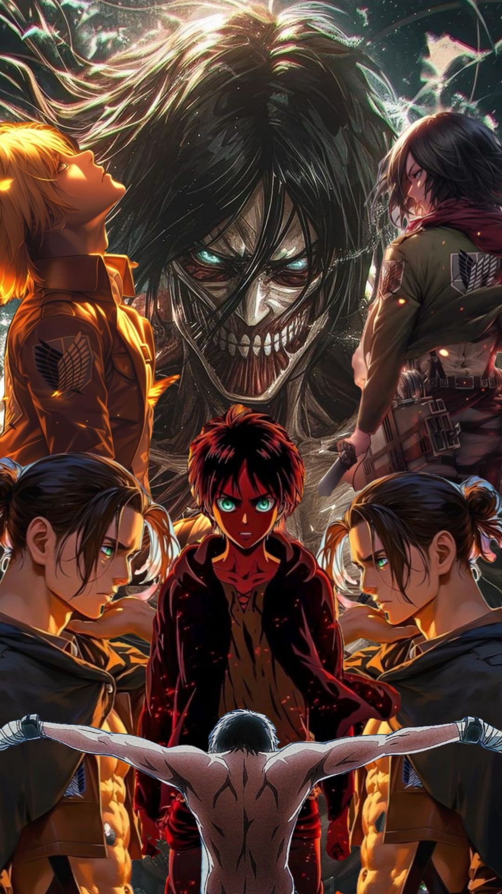

My brothers and siters it with great pleasure that i welcome you all to my very first website which is also my demo where am going to talk about ANIME.Well most people say anime is for kids and go on to watch show like euphoria and call it mature a show built on hyper-sexualization self destruction and somehow thats concidered deeper than anime.Here is the huge differnce between showing chaos and understanding itbecause some stories i.e euphoria dont teach you anything but just show dysfunction people stuck in cycles seeking validation seeking relationships and instead of growth it turns that into sth aesthetic. Comparing this to anime eg vinland saga(for those who havent watched it yet i highly recommend it) thorfin starts with revenge and ends up with emptyness until he realizes true strength require speace
Anime is one of those rare human creations where imagination isn't held back by physical limits. From my perspective, that freedom is exactly why it can sometimes feel more real than live-action movies or series—even when it's about things that clearly aren't real at all.This then brings us to the billion-dollar question: what makes anime so compelling?
First, anime lets creators express ideas without the usual constraints of budget, physics, or actors .In something like Attack on Titan, you get massive titans, impossible battles, and intense emotional stakes that would be insanely difficult (and expensive) to pull off convincingly in live-action. But in animation, those limits disappear—so creators focus more on storytelling and meaning instead of logistics. It also allows for very distinct artistic styles. Compare the soft, emotional storytelling of Your Name with the psychological intensity of Death Note. Same medium, totally different vibes. That range is something human creativity thrives on.